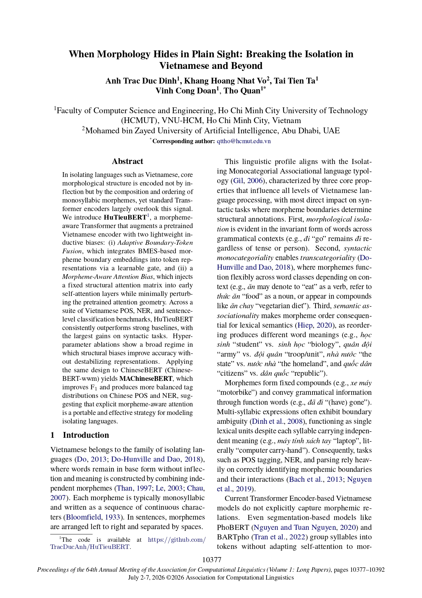
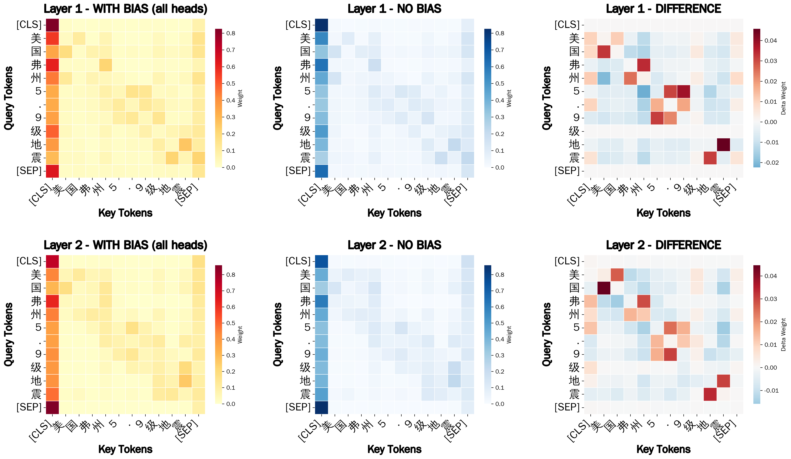

I'm just back from presenting my first paper as lead author at an A*-ranked venue — ACL 2026 — and I finally have a free afternoon to explain what it's actually about, since "morpheme-aware attention bias" doesn't exactly make for great small talk at the poster session.
Here's the thing about Vietnamese: it doesn't really do word endings. No suffixes, no conjugations, no little grammatical stickers glued onto a word to tell you what it's doing. Meaning is built by lining up tiny, independent syllables — morphemes — one after another, the way you'd snap together Lego bricks. học (study) + sinh (person) = học sinh (student). Swap the order of the exact same two bricks and you get sinh học (biology) — a completely different word.

The problem: a standard Transformer encoder — BERT, PhoBERT, take your pick — has no idea any of this is happening. It sees a row of tokens and lets attention wander freely across all of them, including, awkwardly, across boundaries it really should be respecting. When we probed this, Vietnamese attention kept leaking between one compound word and its neighbor, something English attention (which gets word boundaries handed to it for free, via spaces) mostly avoids.
So we built HuTieuBERT — yes, named after hủ tiếu, the noodle soup, because a good bowl is a bunch of separate ingredients that only make sense together, in the right order, which is basically the entire thesis of this paper. It nudges a pretrained encoder in two small, well-behaved ways. First, we tag every syllable with where it sits inside its word — Begin, Middle, End, or Single, a scheme linguists call "BMES" — and quietly fuse that tag into the token's embedding through a learnable gate, so the model gets to decide how much to trust the hint. Second, we bake a lightweight "stay inside your own compound" preference directly into a couple of early attention layers: reward attention that stays within the same word, gently discourage it from wandering into the next one.

The nice part is how conservative it all is. We deliberately keep the structural nudge small enough that it doesn't overwrite the model's pretrained instincts — more of a tap on the shoulder than a shove. And you can actually watch it working: on Vietnamese sentences, the biased attention heatmaps light up cleanly along morpheme boundaries instead of blurring across them, layer after layer.

Across Vietnamese POS tagging, NER, and sentence-level classification, HuTieuBERT beats PhoBERT, mBERT, and XLM-RoBERTa — with the biggest wins exactly where you'd expect: tasks that live or die by getting word boundaries right. And since Mandarin Chinese shares the same "isolating language" DNA — no inflection, monosyllabic morphemes, order doing most of the heavy lifting — we ported the same trick over as MAChineseBERT. Same story: sharper, more balanced predictions, this time on Chinese POS and NER.

None of this happens solo. Huge thanks to Prof. Tho Quan, Khang Hoang Nhat Vo, Tai Tien Ta, and Vinh Cong Doan for turning "morphemes are actually kind of cool" into a real paper, and to everyone at ACL who stopped by the poster to talk noodles and Transformers in the same sentence. Everything else — the paper, the talk recording, and the code — is linked below.